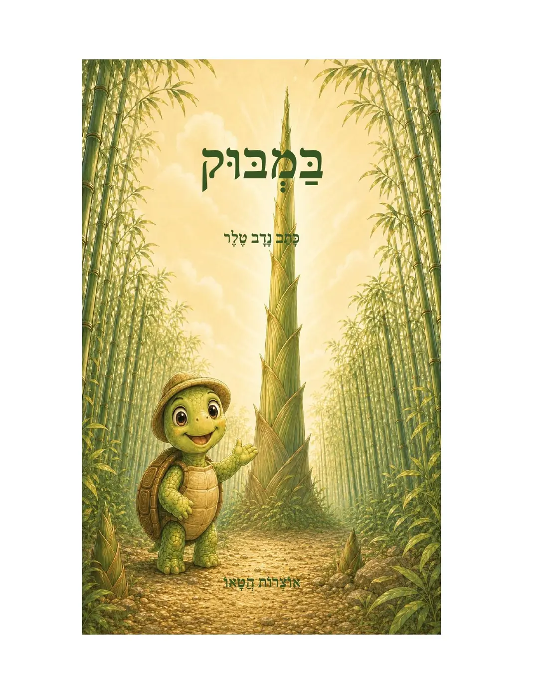

🏛️
תורת המדינה הדואלית
עמוד עומק ייעודי לקידום בגוגל: מודל מדינת שוק דואלי, דיור, עבודה, AI, תעשייה, בנק ציבורי ורצפה אזרחית.
פתח את העמוד המרכזימאת נדב טלר — תורת המדינה הדואלית, ספר יסוד, אוצרות הטאו, סולם העדות הציוויליזציונית ובוטים חכמים להתבוננות וללמידה.

עמוד עומק ייעודי לקידום בגוגל: מודל מדינת שוק דואלי, דיור, עבודה, AI, תעשייה, בנק ציבורי ורצפה אזרחית.
פתח את העמוד המרכזיקטלוג ספרים עם חיפוש, סינון, כפתורי אמזון ועברית, והפרדה בין ספרי ילדים, פילוסופיה, גוף ומדינה.
לכל הספריםקישורים ישירים לטלגרם: בוט המדינה הדואלית ובוט העד — עם אפשרות להעתיק את שם המשתמש.
לבוטיםהמודל מציע לא לבחור בין קצה קפיטליסטי לקצה ריכוזי, אלא לבנות מערכת דואלית: שוק חופשי ליזמות ותחרות לצד רצפה אזרחית שמעניקה ביטחון, דיור, חינוך ותעסוקה.



הצטרפות דרך טופס קצר. מתאים לקוראים, תומכים, אנשי חינוך, מתעניינים במודל ובמשתמשים בבוטים.
הרשמה לתמיכה